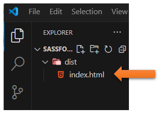

~2 Creating The Projects~
4/29/2024
To turn back on your Watch SASS
Emmet Short cut for creating HTML Boiler Plate code
Setting up the folder and files for the SCSS
The CSS Folder Automatic Generation

To turn back on your Watch SASS
If you do not see Watch Sass in the task bar, try stretching out the Visual Studio app, then looking at the far left of the bar. Or you could go back to settings, put SASS in the search bar, and go to the wheel here.

At the bottom, choose WATCH SASS

Starting the Project
You want to start by opening Visual Studio Code
Create a new folder
You will want to create a new folder for your SASS project somewhere on your computer, or you could just hover and create the new folder right inside of Visual Studio code

Then open it, you want to create a dist folder, and an index.html file, inside of that. Hovering right here in the Visual Studio, will allow you to see the icons, where you can select to create both a new folder, and a new html file.
Watch it, Notice that we are placing the index.html inside of the dist folder, you know it is inside because it is indented from the dist folder.
Emmet Short cut for creating HTML Boiler Plate code
Shift-exclamation-Enter will give you the boiler plate code
We can just name the project SASS
The link for the Style Sheet
Watch it, Ok, now this is important! Because when we are linking to the style sheet from our HTML file, we DO NOT use SASS or SCSS, which is another name for this. Since browsers do not understand this technology, it must be turned back into regular CSS before it can be processed by the browser.
We have not yet made our style sheet yet, but this is what the link will look like
SCSS is the newer version of SASS, as it does not use the more difficult syntax form which entails braces and semi-colons. For this tutorial, we will be dealing with the easier version of SCSS, but it is all just as Sassy to me.
Note- Make sure you add this line to make this connection to your style sheet
<link rel ="stylesheet" href=".\css\main.css">
Setting up the folder and files for the SCSS
This time, make sure that you are outside of the dist folder, we will be setting up this folder in the root of folder.
Check the indent of the new folder, it should be at the same level as the dist folder and not indented.
Inside of that new folder, create the main.scss file. Your file folders and file indents should now look like this.
Open that main.scss file in Visual Studio

You may have to go back to your setting to turn back on SASS, if you do not see it in the task bar at the bottom. Click on the setting wheel at the left side of the app, and look at the bottom for it. It might need to be turned on from here.
Now if you click on the taskbar that says Watch Sass, you will see an output in the terminal pop up.
The CSS Folder Automatic Generation
Since you clicked on that Watch Sass button at the bottom, it has automatically created a CSS folder for you. You did not create this folder. It is automatically generated for you when you hit that SASS button.

If you open up that folder, you will see two files, that were also automatically generated for you.
Testing our SCSS file
Make sure you are in your scss file and not any other file. Remember things start out here and then it is recognized by the Watch Sass, and turned into CSS.
Here we will just test some simple CSS, since we know that SCSS also recognizes CSS.
Watch it, Make sure you save for things to work
Now go and look at your CSS file, because as soon as you saved the SASS compiler automatically wrote your code into the CSS file.
If you have Live Server installed inside of your Visual Studio Code, you can hit that and view what you did inside of a browser
Watch it, make sure before you hit your live server, you are on your index.html file, or you will just be seeing some weird files.
Yeah, that is some bright sunshine on a webpage there.
Watch it, when using SCSS, never modify the CSS file, you only want to modify the SCSS file, and have that write all of your CSS code for you.